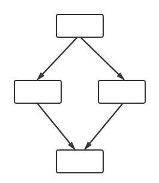

The Fission Functions-as-a-Service framework gives you easy, open source serverless functions on any Kubernetes cluster.
Functions tend to do one logically separate task, and they're usually short-lived. For many relatively simple applications this is good enough. But a more complex application that uses serverless functions needs to compose functions together.
Fission Workflows is an open source framework that allows you to orchestrate a set of serverless functions without directly dealing with networking, message queues, etc.